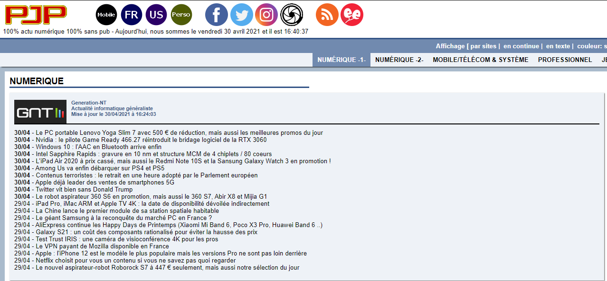
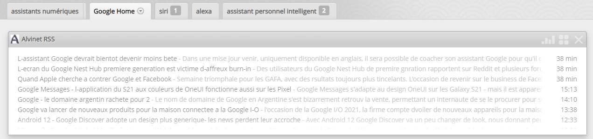
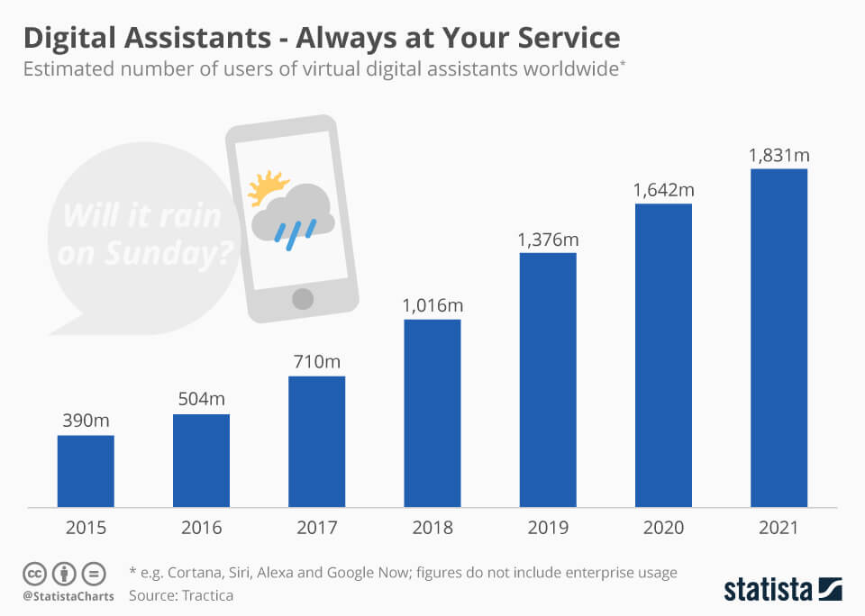
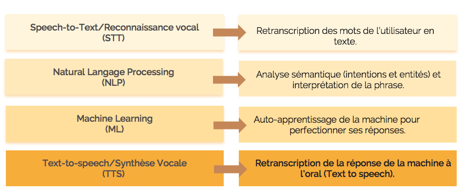
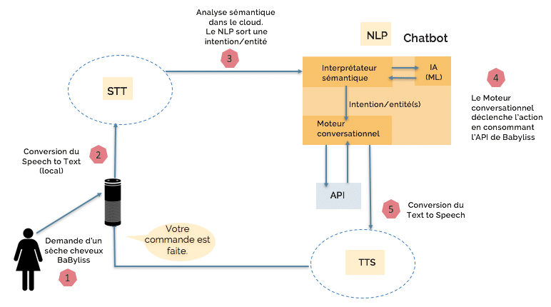
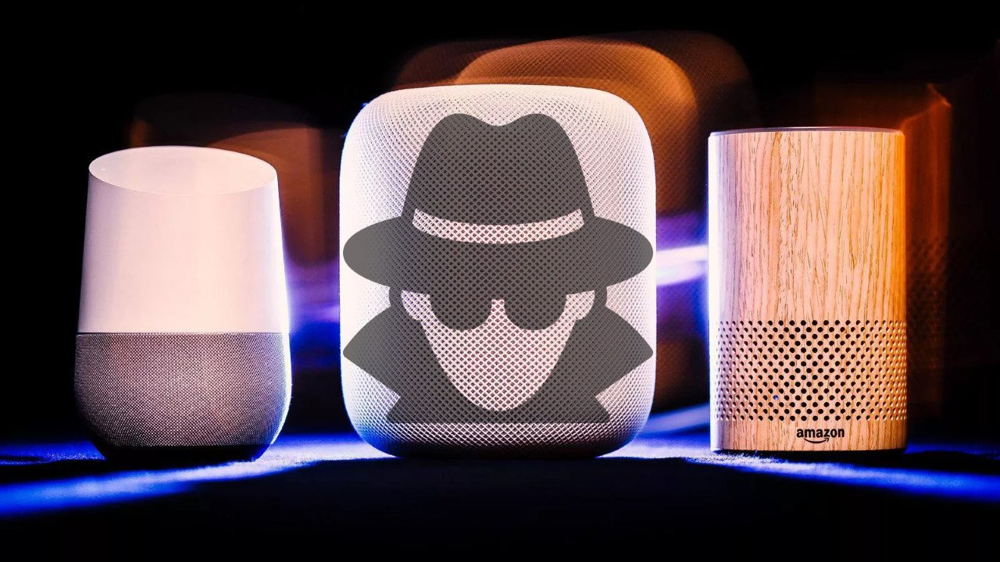
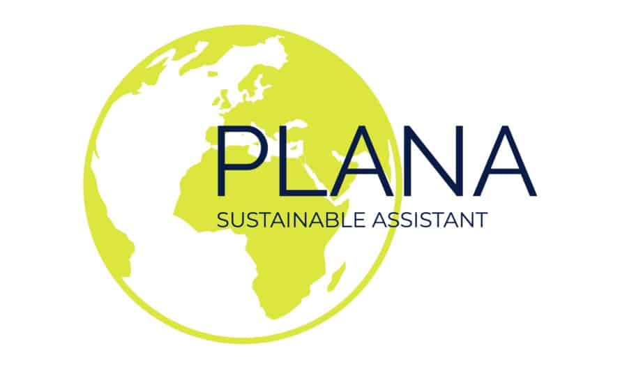

Parcours de professionnalisation
Veille technologique
Introduction
Une très grande partie de la population utilise un assistant vocal tous les jours, mais on ne sait pas forcément comment ça fonctionne et ce qui se cache derrière ces petites boites.
Cela fait quelques mois que j’utilise plusieurs flux RSS/dashboards (Pearltrees, Netvibes, PhoenixJP) pour obtenir des informations et explorer le sujet.
Grace à ces outils j'ai pu renseigner de nombreux articles dans un fichier
Présentation
Un assistant numérique est un agent logiciel qui peut effectuer des tâches ou des services pour un individu.
Ces tâches et les services effectuées par l’assistant sont basés sur :
À partir de 2017, les capacités et l’utilisation d’assistants virtuels s’étendent rapidement, conséquence de développements de l’intelligence artificielle.
Cette technologie s’intègre dans plusieurs appareils et objets notamment dans les enceintes intelligentes,
dans les systèmes d’exploitations mobile ou dans les systèmes d’exploitation de bureau.
Elle fournit une large variété de services
Le parcours santé sera également réinventé. Il sera possible de recevoir des informations sur des traitements à suivre (dose à prendre, fréquence, notice…), de contacter son médecin traitant ou de s’auto diagnostiquer. Health tap’s Doctor AI aide déjà à diagnostiquer des pathologies primaires (anxiété, angoisse) ou de revoir certains diagnostics (fièvre jaune).
Dans le secteur de la Banque, les usages des assistants vocaux permettront de pouvoir recourir à un véritable conseiller en ligne, disponible 24/24 7j/7 pouvant nous assister dans toutes nos démarches. Capital One et Starling Bank, proposent déjà d’obtenir des informations sur son solde, d’être renseigné sur ses dernières transactions ou d’effectuer un virement bancaire.
Fonctionnement
Le mode de fonctionnement des assistants personnels intelligents repose sur 4 grandes briques
Schéma de fonctionnement d’une commande pour un sèche cheveux via l’assistant personnel vocal
Dans la course à l’assistant vocal, tout l’enjeu technologique repose sur la puissance des moteurs NLP. Ces moteurs, adossés à des algorithmes, sont alimentés par des quantités massives de données leurs permettant d’analyser de façon continue et autonome. Ces algorithmes permettent donc à la machine de s’auto-améliorer. C’est ce qu’on appelle « le machine learning » ou « apprentissage automatique ». Plus la machine sera entrainée, plus elle sera performante pour identifier l’intention émise par l’utilisateur.
En veille permanente, au cas où il serait sollicité, par un mot-clé, l’assistant vocal peut en effet s’activer et enregistrer inopinément une conversation.
Il y a potentiellement une faille de sécurité, avec un envoi de données possible, mais même dans ce cas, il n'y a pas d'être humain qui écoute. Les termes sont analysés par des robots. Ce n'est pas parce que vous envoyez des données à un serveur qu'un employé de Google va vous écouter. Pour qu'il y ait un risque important, il faudrait que les robots soient paramétrés pour repérer les données confidentielles, et cela demanderait un entraînement très important.
Enjeux économiques
Saisissant l’enjeu majeur que représente cette nouvelle interface de communication,
les GAFAM se sont lancés à la conquête du vocal en proposant des assistants vocaux et en développant un écosystème d’objets connectés.
C’est autour de cet écosystème que se joue le bras de fer entre ces géants.
En effet, la voix représentant l’interface la plus naturelle et intuitive pour l’homme, leur objectif est de devenir le medium unique pour accéder plus rapidement et durablement à davantage de consommateurs.
D’un coté, les géants (GAFAM) vont devoir s’assurer de garder leur domination face aux nouveaux acteurs, plus particulièrement chinois,
qui attaquent férocement le marché de la voix.
Deuxième point important, ils vont devoir continuer a construire des partenariats avec d’autres marques dans le secteur de la domotique,
de l’automobile, de la santé, pour qu’ils adoptent leur interfaces. Également, ils vont devoir continuer a améliorer l’IA des différentes interfaces pour les rendre encore plus performantes et plus simples,
et développer de nouvelles fonctionnalités plus performantes pour répondre aux besoins des utilisateurs.
Impact sur l'environnement
Plus de données = Plus de data centers
Alors que le monde ne comptait que 500 000 data centers en 2012, le nombre de ces derniers dépasse aujourd’hui les 8 millions.

Représentant 2 % des émissions de gaz à effet de serre totales, l’empreinte carbone des centres de données est comparable à celle du transport aérien. Le stockage des données est susceptible de générer des émissions à hauteur de 14 % à l’horizon 2040.
De nos jours, les data centers du monde consomment davantage d’énergies que la totalité de la consommation électrique de la Grande-Bretagne.
Les data centers détiennent actuellement un niveau élevé de la consommation d’énergie des technologies (17 %).
Selon les estimations, la consommation double tous les quatre ans. Les data centers du monde pourraient utiliser 10 % de la production électrique mondiale en 2030, contre seulement 3 % à l’heure actuelle.
La construction de multiples data centers pourrait altérer l’écosystème naturel du site d’installation et augmenter le nombre d’espèces menacées. En effet, la création d’un data center nécessite un grand espace susceptible de remplacer un endroit censé être réservé aux animaux et aux plantes.
L'ONG Digital for Planet a mis au point Plana, un assistant personnel équivalent de Google Assistant ou de Siri, qui a pour but d'amener les internautes à un usage plus responsable de leurs mobiles

Plana est conçu pour analyser les usages de l'utilisateur afin de proposer de petites modifications
dans son mode de consommation des smartphones
Par exemple, l'assistant va geler automatiquement toutes les messageries entre 22 heures et 7 heures du matin,
ou selon les réglages de l'utilisateur ou l'informer de l'impact écologique de certaines actions effectuées au quotidien
comme le simple téléchargement d'une application.
Conclusion
Le marché des assistants numériques est en permanence en train de s'améliorer techniquement et commence à être
utilisé dans de nombreux domaines pour petit à petit remplacer le travail des hommes, malgrès les rumeurs d'espionnage.
Mais il est aussi devenu le terrain de guerre de grands groupes qui utilisent ces appareils comme des produits
de propagande pour mettre en valeur leurs technologies et leurs appareils au détriment de l'écologie.
Personnellement, je trouve que ces appareils et surtout cette technologie de l'IA est très utile dans notre vie de tous les jours. Elle prend de plus en plus de place dans notre société et commence à remplaçer les humains dans de nombreux métiers.